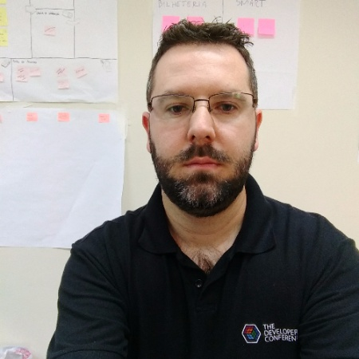

Sobre
O Vale dos Desenvolvedores é uma iniciativa independente de Desenvolvedores de Software do Vale dos Sinos para realizar Meetups e outros eventos para promover a troca de conhecimento e Networking entre quaisquer envolvidos ou interessados em tecnologia.
Nossos Meetups incluem palestras diversas de assuntos como Linguagens de Programação, Frameworks, Carreira, etc.
Localização
ERS-239, 2755. Novo Hamburgo, RS | Auditório do prédio Multicolor
Palestrantes
-
Eduardo Sganzerla @esganzerla
Usuário de desenvolvimento web desde aproximademente os 8 anos, quando teve acesso ao antigo HPG, em sábados após as 14h. Isso levou a aprender programar um pouco de Javascript e PHP 4. Conseguiu libertar do desenvolvimento por um tempo, se formou em Administração de Empresas, mas em 2015 teve uma recaida e está viciado em desenvolvimento front-end.
-
Abner Soares Alves Junior
Front-end developer há 6 anos, atualmente full-stack developer na Codeminer42. Amante de café e games online. Nas horas vagas gasto um tempo olhando o Awwwards.
-

Gabriel Schmitt Kohlrausch
Diretor Pesquisa & Desenvolvimento - Society Tecnologia da Informação LTDA; Arquiteto de software Society
Programação
| Data | Hora | Palestra | Descrição |
|---|---|---|---|
| Terça, 12 de Setembro de 2017 | 19:30 | VueJS como uma droga de entrada | Se você ainda não é dependente de nenhuma biblioteca/framework vai conseguir experimentar o prazer de usa-los. Além do crescente destaque o VueJS está recebendo na comunidade ele é uma excelente porta de entrada. Vamos conversar sobre tudo o que é necessário para você construir sua primeira aplicação. |
| Terça, 12 de Setembro de 2017 | 20:10 |
 Serverless Architecture: não significa "sem servidores"
Codeminer42
Serverless Architecture: não significa "sem servidores"
Codeminer42
|
Uma breve introdução a essa forma tão badalada de computação "sem servidores", mas que tem sim servidores. Vamos descobrir o que isso significa e algumas características importantes para você começar a usar essa arquitetura em seus projetos, seja ele simples ou complexos. |
| Terça, 12 de Setembro de 2017 | 20:30 | Azure Service Bus: Aplicações escaláveis através de mensageria STI Society Tecnologia da Informação | Apresentar como o uso de mensageria pode ajudar uma aplicação a escalar. Para isso vamos um pouco além do Service Bus do Azure e vamos utilizar um framework (MassTransit) para auxiliar a comunicação com o Service Bus, bem como demonstrar como isso tudo se encaixa com DDD (Domain Driven Design). |
Patrocinadores
Apoio


Contato
Para mais informações, propostas de palestras, patrocínio, etc. Entre em contato conosco enviando e-mail para Paulo Diovani ou Rodrigo Boniatti.
Você também pode falar conosco no Slack Developers Brasil no canal #valedosdevs.
Nota: Para solicitar acesso ao Slack acesse developers-brasil.herokuapp.com.